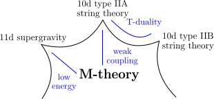

A String Theorist's Journey
with Python
Chan Y. Park
New High Energy Theory Center, Rutgers University
Jul. 14, 2016 @ SciPy
Outline
- Crash course: string theory
- From a physics problem to a computational task
- My journey of building a Python program
Experimental-Mathematical-Computational-Theoretical-Physics!
- Recent development in both hardware and software of computational tools enabled us to study physical and mathematical problems by combining analytical and numerical methods together, which is proven to be complementary to the traditional pen-and-paper approach for various topics.
What is string theory?
- High-energy theory, more commonly known as theoretical particle physics, is a study to understand fundamental forces of nature.
- It includes string theory, which is an effort to build a physical and mathematical framework to describe the fundamental forces in a unified way.
Why computational analysis in string theory?
- String theorists are fond of mathematical and exact results. However, many problems in string theory pose significant challenges to a traditional pen-and-paper approach. We tackle such a problem by using computational method, which gives us hints toward the formulation of a complete answer.
String theory, M-theory, and M-branes
- M-theory is a prospective theory of quantum gravity that lives in an 11-dimensional spacetime.
- 10-dimensional string theories and 11-dimensional supergravity are believed to be different limits of M-theory.
M-branes
- M-theory has a higher-dimensional analogue of electromagnetic field
- M-theory has two kinds of extended objects, M2-branes and M5-branes, that couple to the field electrically and magnetically, respectively.
- An M$p$-brane spans a $(p+1)$-dimensional spacetime.
- They saturate an inequality1, \[ M \geq \left| Z \right|, \] where $M$ is the mass and $Z$ is the central charge of the object.
[1] Bogomolny-Prasad-Sommerfield (BPS) bound
Supersymmetric gauge theory from M5-brane

- When we wrap \( N \) M5-branes on a punctured Riemann surface \(C\), we obtain a 4d superysymmetric gauge theory1. [Gaiotto (2009)], [Gaiotto, Moore, Neitzke (2009)]
- The M5-branes merge2 into a single M5-brane wrapping a surface3 \( \Sigma \), $$\begin{align} f(z, x)=0,\ z \in C, \label{eq:SW_curve} \end{align}$$ which is a multi-sheeted cover \(\{ x_{i = 1, \ldots, N} \}\) over \(C\).
- \( \Sigma \) determines the low-energy physics of the theory. [Seiberg, Witten (1994)]
[1] \(\mathcal{N}=2\) \( \mathrm{SU}(N) \) theory of class S
[2] in the Coulomb branch of a class S theory
[3] a complex 1-dimensional curve called a Seiberg-Witten curve
Supersymmetric particles from M2-branes
- A particle1 of the theory is identified with an M2-brane ending along a closed curve \(\gamma\)2 on \(\Sigma\). [Henningson, Yi (1997)], [Mikhailov (1997)]
- Its mass is given by integrating a 1-form3 $\lambda = x\, \mathrm{d} z$ along \(\gamma\), \[ M = |Z|,\ Z = \oint_\gamma \lambda. \]
[1] a BPS state
[2] $\gamma \in H_1(\Sigma; \mathbb{Z})$
[3] Seiberg-Witten differential
Spectral network
- The boundary of the M2-brane satisfies a differential equation
$$\begin{align} \frac{\partial}{\partial t} \left( \lambda_{j} - \lambda_{k} \right)= \left( x_j(z) - x_k(z) \right) \frac{\partial z}{\partial t} = e^{i \theta},\label{eq:class_S_diff_eq} \end{align}$$where $t$ is a real parameter along $\gamma$, $\lambda_i = x_i\, \mathrm{d}z$ is the value of $\lambda$ on the $i$-th sheet, and $\theta= \arg(Z)$. [Klemm, Lerche, Mayr, Vafa, Warner (1996)]
- Extending the previous construction, we can consider a set of curves on $C$ that are the solutions of ($\ref{eq:class_S_diff_eq}$) for a fixed $\theta$, which is called a spectral network1. [Gaiotto, Moore, Neitzke (2012)]
[1] of the class $\mathcal{S}$ theory determined by $f(z, x)$
Spectroscopy we learned at high school
- A flame test is a qualitative method to identify an element.
Cu
Na - An emission spectrum is used to quantitatively distinguish different elements.

Cu

Na
Supersymmetric spectroscopy
via spectral network
spectral network

particles

central charges
- Using spectral networks, we can find the particle1 spectrum of a given supersymmetric theory2.
- We use the spectrum to identify what the theory is, which is useful when the theory is strongly coupled and we lack any perturbative approach to understand it.
[1] two-way streets of finite $\mathcal{S}$-walls corresponding to BPS states
[2] the BPS spectrum of a 4d $\mathcal{N} = 2$ theory of class $\mathcal{S}$ on the Coulomb branch
Getting spectral networks using $\texttt{loom}$
From a physics problem to a computational task
- For a fixed value of $\theta$,
- Find branch points of $f(x, z) = 0$ on the $z$-plane.
- For a fixed value of $\theta$,
- Find branch points of $f(x, z) = 0$ on the $z$-plane.
- Plot curves1 from the branch points by solving the differential equation (\ref{eq:class_S_diff_eq}).
[1] $\mathcal{S}$-walls
- For a fixed value of $\theta$,
- Find branch points of $f(x, z) = 0$ on the $z$-plane.
- Plot curves1 from the branch points by solving the differential equation (\ref{eq:class_S_diff_eq}).
- Find intersections of the curves, and when the curves satisfy a certain condition2, plot a curve from the intersection according to (\ref{eq:class_S_diff_eq}).
[1] $\mathcal{S}$-walls
[2] roots of the $\mathcal{S}$-walls sum up to another root of the Lie algebra associated to the theory of class $\mathcal{S}$

- For a fixed value of $\theta$,
- Find branch points of $f(x, z) = 0$ on the $z$-plane.
- Plot curves1 from the branch points by solving the differential equation (\ref{eq:class_S_diff_eq}).
- Find intersections of the curves, and when the curves satisfy a certain condition2, plot a curve from the intersection according to (\ref{eq:class_S_diff_eq}).
- Find intersections from the newly grown curves and repeat the process.
[1] $\mathcal{S}$-walls
[2] roots of the $\mathcal{S}$-walls sum up to another root of the Lie algebra associated to the theory of class $\mathcal{S}$
- For a fixed value of $\theta$,
- Find branch points of $f(x, z) = 0$ on the $z$-plane.
- Plot curves1 from the branch points by solving the differential equation (\ref{eq:class_S_diff_eq}).
- Find intersections of the curves, and when the curves satisfy a certain condition2, plot a curve from the intersection according to (\ref{eq:class_S_diff_eq}).
- Find intersections from the newly grown curves and repeat the process.
- The set of curves obtained this way is a spectral network $\mathcal{W}_\theta$.
[1] $\mathcal{S}$-walls
[2] roots of the $\mathcal{S}$-walls sum up to another root of the Lie algebra associated to the theory of class $\mathcal{S}$
Now we generate a family of spectral networks for various values of $\theta$ between $0$ and $\pi$, and look for a topological change of the networks.

M5- and M2-branes at $\theta_\mathrm{c}$
When it occurs at $\theta = \theta_\mathrm{c}$, there is a subnetwork $\mathcal{W}_\mathrm{c} \subset \mathcal{W}_{\theta_\mathrm{c}}$ of finite length and a particle corresponding to $\mathcal{W}_\mathrm{c}$.
Collect all the particles and calculate the spectrum1, and use the information to identify the 4d theory.
[1] gauge, flavor, and central charges of the BPS states.
$\texttt{loom}$, a Python program to generate spectral networks
- Previously several Mathematica codes for generating spectral networks existed.
- Could not collaborate effectively, also overlapping investment of time and effort to maintain separate codes.
- Issues with the number of licenses available, with the accuracy and efficiency of numerical calculations, and with hard-to-understand internal warnings and errors.
- I launched an open-source project $\texttt{loom}$ on GitHub and started a collaboration with string theorists working on spectral networks.
Why is $\texttt{loom}$ written in Python?
- Easy enough for my physicist colleagues without programming experience to learn, yet being a full-fledged standard programming language.
- Open-source
- Can look into what's going on in the box when I want.
- A type of software license that goes well with academic researches.
- Active and helpful Python community.
- Diverse and powerful libraries, including a suite of scientific libraries provided by the ScyPy stack.
- Easy to work with SageMath to use its extensive math library.
Python in the core module of $\texttt{loom}$
Symbolic math
- SymPy
- Extracting from the Riemann surface ($\ref{eq:SW_curve}$) the differential equation ($\ref{eq:class_S_diff_eq}$) requires symbolic mathematics.
- SageMath
- SageMath's extensive knowledge over Lie algebras and their representations is crucial in studying spectral networks.
- Sometimes the equation ($\ref{eq:SW_curve}$) for the Riemann surface is so complex that we need a more powerful library than SymPy, where SageMath is useful.
- $\texttt{loom}$ calls SageMath via $\texttt{subprocess}$.
Numerical analysis
- ScyPy
- Solving the differential equation ($\ref{eq:class_S_diff_eq}$) is done using $\texttt{scipy.integrate}$
- NumPy
- Thanks to its contiguous memory model, $\texttt{numpy.ndarray}$ is not only useful in storing data and exchange it with external C/C++ libraries but also very fast when doing a vectorized operation on the data.
- The Computational Geometry Algorithms Library (CGAL, http://www.cgal.org/)
- The geometric problem of finding intersections between curves in 2d was done using the sweep-line algorithm of CGAL, a C++ library for geometric algorithms.
- Python is great in glueing the C++ library into $\texttt{loom}$.
Framework
- $\texttt{multiprocessing}$
- Generating a family of spectral networks is naturally a collection of parallel jobs.
- Python has a native support of multiprocessing, which boosts the throughput of $\texttt{loom}$ linearly with the number of available CPU's.
- $\texttt{logging}$
- The core of $\texttt{loom}$ and its front-end is split into separate processes, both for multiprocessing and for the implementation of UI's.
- Use of $\texttt{logging}$ and $\texttt{multiprocessing.Queue}$ makes it easy to deliver messages from the core module to the front-end.
Data storage
- $\texttt{loom}$ carries a large data (~1GB) in various types when studying a complicated spectral network. It takes hours to generate such a data, so it is crucial for a successful research and collaboration to efficiently save and load the data.
- Various parameters, both symbolic and numeric, are conveniently managed using a configuration file formatted by $\texttt{ConfigParser}$.
- JSON
- Although $\texttt{pickle}$ is useful when saving data in the middle of debugging, the excellent portability of JSON and Python's support for it is very important as my collaboration includes Linux, Mac, and Windows users.
- Unexpectedly fast when saving and loading a large data, and Python's support for $\texttt{threading}$ makes an IO delay essentially nonexsitent.
- One downside of using a JSON data is its large size due to the format, however using $\texttt{zipfile}$ to create an archived file in memory eased the burden quite a bit.